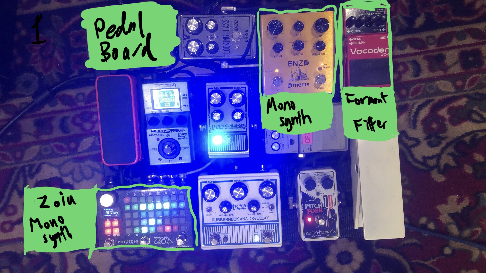
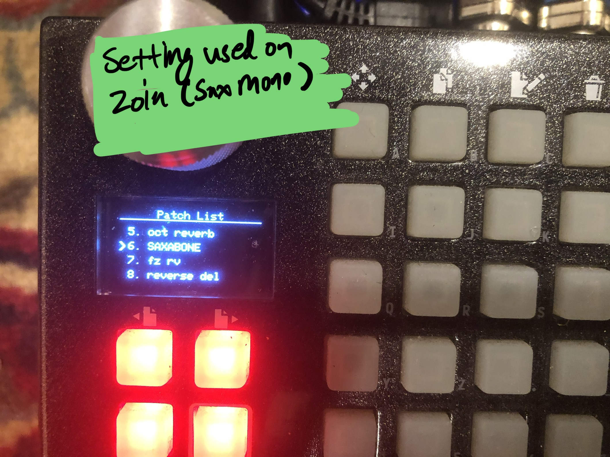
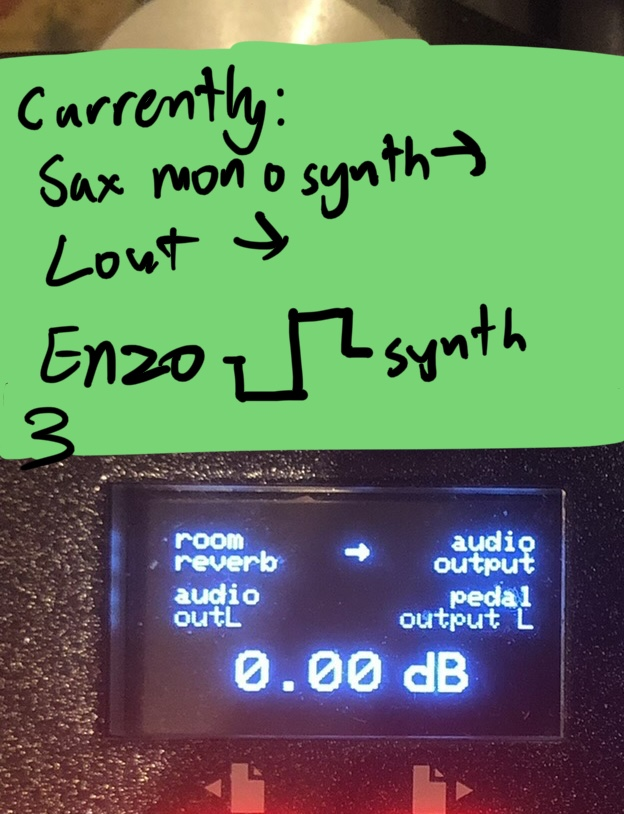
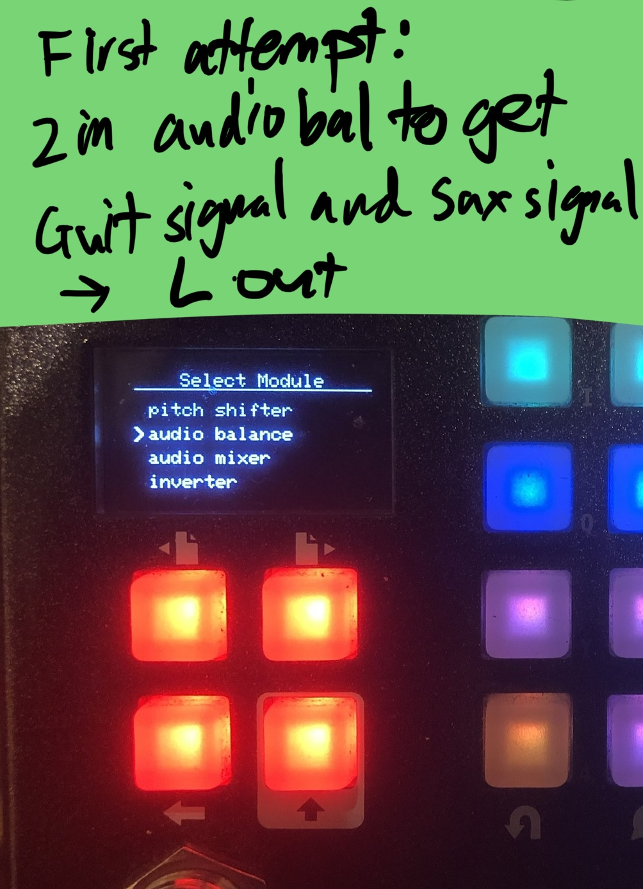
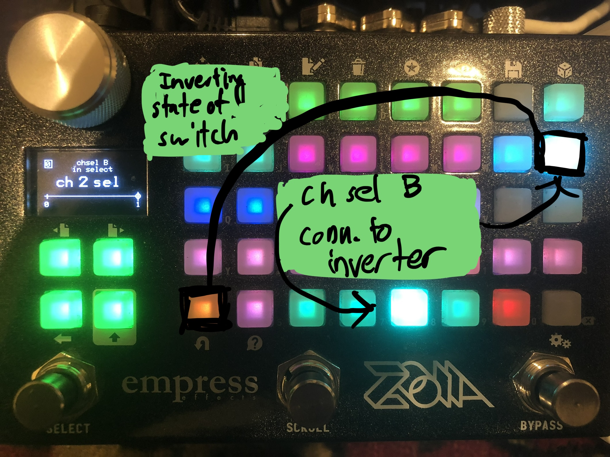
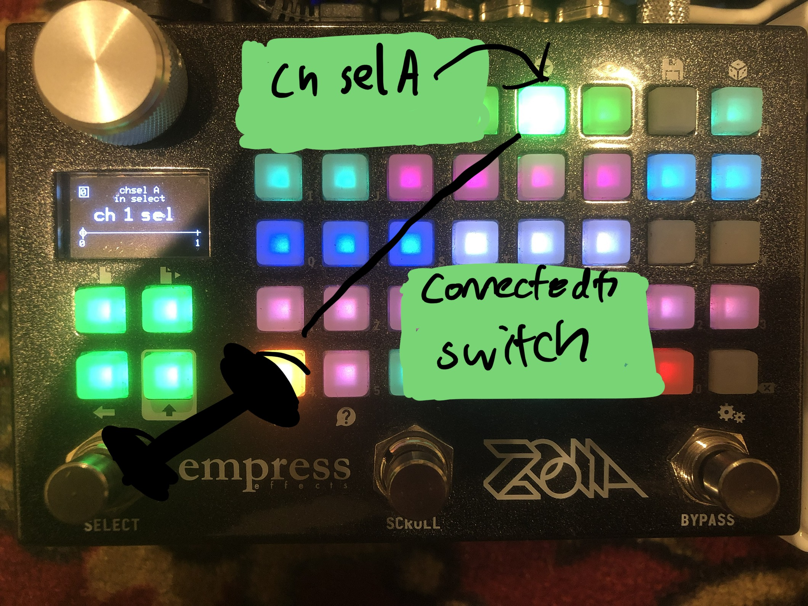

Recently, one of my English professors demonstrated his Tuvan Throat singing method
and made me want to try to create a similar sound mechanism using my guitar, a violin bow, a formant filter, and two monosynths, in time for Thursday's experimental music club's jam.
THE PLAN!
WRITE A DETAILED INSTRUCTION OF HOW I WILL GENERATE A MULTI-TIMBRAL, MULTI-PITCH SOUND BASED ON 2 MONOSYNTHS, A FORMANT FILTER, AND ADDITIONAL PITCHSHIFTING, FROM A SINGLE NOTE PLAYED ON THE GUITAR WITH A BOW, IN TIME FOR THURSDAY
DANGER!
WHAT I HAVE TO START WITH:
VIOLIN BOW
GUITAR
MY PEDALBOARD (BOSS VOCODER, MERIS MONOSYNTH, ZOIA SAXABONE SAX/TROMBONE MONOSYNTH, PITCHSHIFTERS)


22 HOURS TILL START OF JAM [OH NO]
oh, and also 25 hours or so before I need to have a website ready, but that's beside the point.
oh well.
THE.
CRUNCH.
BEGINS.
NOW.
FIRST ISSUE
AS THE SOUND IS GOING FROM THE ZOIA (MONOSYNTH) TO ENZO (MONOSYNTH), I WOULD BE NOT ABLE TO CREATE THE DESIRED EFFECT (MIX OF GUITAR, ENZO, SAX SYNTH SOUND) AS IF I DO A MIX ON THE ENZO, IT WOULD RESULT IN POLYPHONIC INPUT TO ENZO: PRETTY, EXPERIMENTAL, BUT NOT THE EFFECT DESIRED ATM

##video sample here
SOLUTION
AS THE ZOIA HAS STEREO OUTS, THE SAX SYNTH AND GUITAR SIGNAL CAN BE ROUTED OUT DIFFERENT OUTPUTS, ONE INTO THE MONOSYNTH, THE OTHER INTO THE RIGHT OUT.
POSSIBILITY: SETUP A TOGGLEABLE SWITCH, TWO CHANNEL SELECTORS (CHSEL A AND CHSEL B), AND AN INVERTER TO SEND CV INFO TO THE CHANNEL SELECTORS TO CHOOSE WHERE EACH SIGNAL GOES

SETUP: CV SIGNAL FROM TOGGLE SWITCH GOES INTO CHSEL A; SAME VALUE CV SIGNAL FROM TOGGLE SWITCH IS INVERTED BY INVERTER, THEN SENT TO CHSEL B, WHICH STARTS WITH CV AT 5V. RESULT: WHEN CHSEL A IS 0V, CHSEL B IS 5V; WHEN CHSEL A IS 5V, CHSEL B IS 5-5=0V
SOUND SAMPLE
pizza break
I haven't eaten yet today, and all that yelling was tiring.
##pizza pic goes here
...
UPGRADES, PEOPLE!
what can I upgrade?
Currently, the sax synth is set a 5th up, and the monosynth (toggleable between square and triangle) is set an octave down
However, we live in an age of technology. A Tuvan throat singer can hit suboctaves and fundamentals, but we can hit those AND change them however we want them to
with the power of MIDI and sequencer